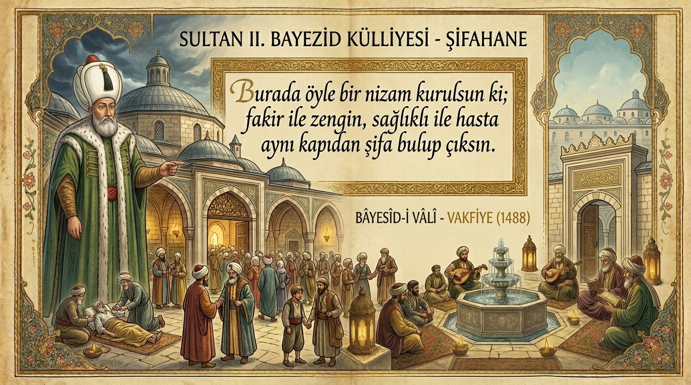

SULTAN II. BAYEZİD (1447 - 1512)

SULTAN II.BAYEZİD
Sekizinci Osmanlı padişahıdır ve Fatih Sultan Mehmet'in iki oğlundan büyüğüdür. 1447'de Dimetoka’da doğdu. Henüz 7 yaşındayken Hadım Ali Paşa nezaretinde Amasya valisi oldu.
Babası Fatih, 1481 yılında vefat edince 20 Mayıs 1481'de tahta çıktı.
Saltanat ve Yönetim Anlayışı
Döneminde imparatorluğun sınırlarını daha da genişletti. Hem batıda hem doğuda seferlere katıldı. Barışçıl yanı daha ön plandaydı. 30 yılı aşan saltanatı süresince barışı ve sakinliği daha çok tercih etti.
Kültür, Sanat ve Kişiliği
Ülkenin her tarafında imar çalışmalarına büyük önem verdi. Amasya, Edirne ve İstanbul’a önemli eserler kazandırdı. İyi bir eğitim gördü. Arapça ve Farsça’yı iyi bilirdi. İslami ilimlerin yanında matematik, edebiyat ve felsefe eğitimi gördü. Bestekardı ve iyi şiir yazardı. Hat sanatı ile uğraştığı bilinmektedir.
Dindardı ve son yıllarını hayır ve din işlerine ayırdığı için kendisine “Bayezid Veli” denilirdi. Türkiye ve Avrupa’daki kütüphanelerde onun mührünü taşıyan sayısız yazma eserin bulunması kültüre verdiği önemin bir göstergesidir.
Edirne ve Sultan II. Bayezid Külliyesi
1484 yılında Edirne’ye geldiğinde, şehrin ileri gelenlerinin kendisine bir Darüşşifa (hastane) ihtiyacından söz etmeleri üzerine, bu isteği haklı bularak büyük şehir ve gelen gidenin çok olduğu Edirne’ye, içinde Darüşşifa’nın da olacağı bir külliye yapılmasını emretti. Bu bağlamda sağladığı maddi ve manevi imkanlarla bu külliye 4 yılda tamamlanarak hizmete girdi.
Vefatı
62 yaşındayken padişahlığı bırakıp doğduğu yer olan Dimetoka’ya giderken Edirne’nin Havsa ilçesinin Sazlıdere köyü yakınlarında 1512 yılında vefat etti. Mezarı İstanbul’da kendi adını taşıyan camiinin yanındaki türbededir.